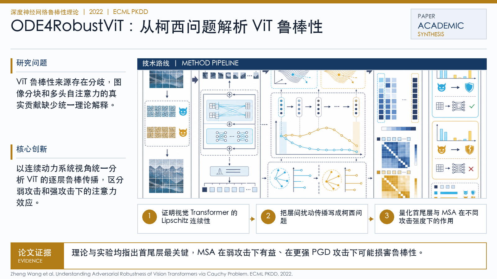

Problem
解决的问题
ViT 鲁棒性来源存在分歧，图像分块和多头自注意力的真实贡献缺少统一理论解释。
Robustness Theory of DNNs · 2022 · ECML PKDD
Understanding Adversarial Robustness of Vision Transformers via Cauchy Problem
Problem
ViT 鲁棒性来源存在分歧，图像分块和多头自注意力的真实贡献缺少统一理论解释。
Value
理论与实验均指出首尾层最关键，MSA 在弱攻击下有益、在更强 PGD 攻击下可能损害鲁棒性。
Paper-grounded Academic Summary
该代表页依据原文摘要、贡献段与方法图注生成。方法视觉由 ImageGen 按论文证据逐篇绘制，中文研究问题、技术路线、创新点与实验结论采用确定性排版，以保证内容与字符准确。
打开原文 PDF
Technical Route
Innovation